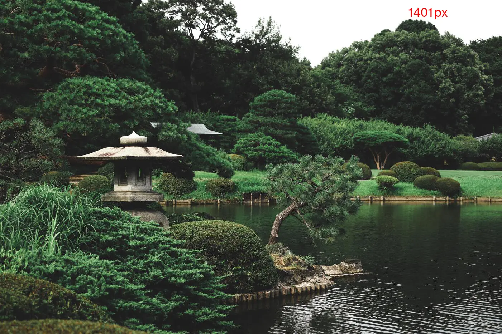

Original-Bild und sechs Versionen
- Original: japanischer-graten.jpg mit 6000x4000
- japanischer-garten_350px.webp 350x233 Auflösung
- japanischer-garten_701px.webp 701x467 Auflösung
- japanischer-garten_1401px.webp 1401x934 Auflösung
- japanischer-garten_2802px.webp 2802x1868 Auflösung
- japanischer-garten_4500px.webp 4500x3000 Auflösung
- japanischer-garten_2802px.webp 6000x4000 Auflösung
Je nach Pixeldichte des Ausgabegerätes sind die Bilder mit höhrer
Pixeldichte schöner - oder sie schauen genau gleich aus, weil der Monitor
halt nicht besser kann.
der Code: Vollständiges srcset
<img src="japanischer-garten_1401px.webp" srcset="japanischer-garten_350px.webp
1x, japanischer-garten_701px.webp 701w, japanischer-garten_1401px.webp 1401w,
japanischer-garten_2802px.webp 2802w,
japanischer-garten_4500px.webp 4500w,
japanischer-garten_6000px.webp 6000w" sizes="350px">
Bei den beiden Varianten unten ist im ersten Bild nur der erste Wert des srcset gesetzt,
beim zweiten schon zwei Werte, ... und so weiter bis zum letzten Bild, das den vollständigen srcset
enthält.
Bild mit fixer Breite: 350 CSS Pixel
Hier wird bei jedem Bild noch das Attribut sizes="350px" gesetzt.

Bild in voller Breite des Browserfensters
Hier ist das Attribut sizes="calc(100vw - 40px)" gesetzt.
Image Credit Photo by Thor Alvis on Unsplash
{kind=link}